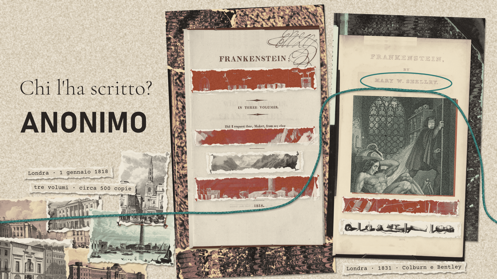

Pagine 01
Mary Shelley · 1818
Frankenstein
e l’anno senza estate
Victor dà vita a una creatura e poi la abbandona. Da quel gesto comincia una storia che ci costringe a chiederci chi sia davvero il mostro. Il romanzo, la vita di Mary Shelley e l’estate del 1816, tra il Tambora e Villa Diodati.
18 min di lettura · 25 min di ascolto
Leggi l’articolo Oppure ascoltalo